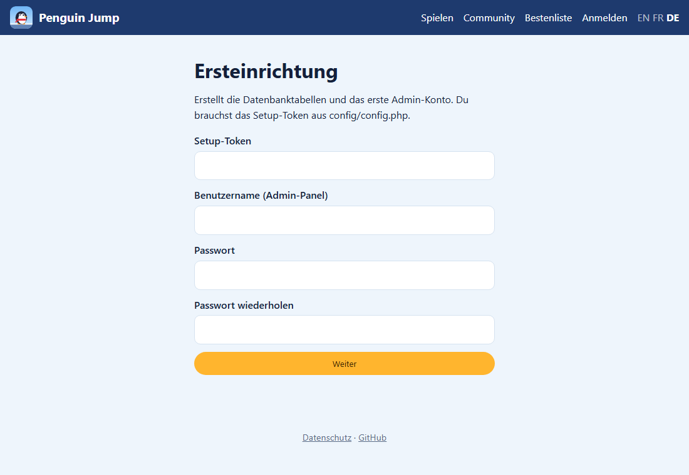
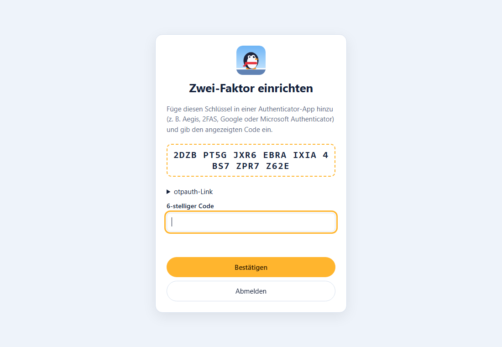

Am Ende läuft die Website von Penguin Jump auf deinem Hetzner-Server unter einer eigenen Subdomain, zum Beispiel spiel.domain-a.ch. Dort gibt es:
/play/, die Community-Level und die Bestenlisten,/konto/ und das Admin-Panel unter /admin/.Die Downloads selbst liegen weiterhin bei GitHub; dein Server liefert die Website, das Spiel im Browser, die Level, die Konten und die Bestenlisten. Rechne mit etwa 45 Minuten, plus Wartezeit, bis DNS und SSL greifen.
web klappt)Claude Game auf deinem PC (für das Werkzeug „Konfiguration-Erstellen“)| Platzhalter | Bedeutung | Beispiel |
|---|---|---|
SPIEL-DOMAIN | Adresse der Spiel-Website (Subdomain) | spiel.domain-a.ch |
domain-a.ch | Deine Hauptdomain aus der ersten Anleitung | jagdclub-xy.ch |
SERVER-IP | Die IPv4-Adresse deines Servers | 65.21.123.45 |
web | Dein HestiaCP-Benutzer für Websites | web |
Die Subdomain spiel soll auf deinen Server zeigen. Weil deine DNS-Zone auf dem eigenen Server liegt, trägst du das direkt in HestiaCP ein.
web anmelden (wie in der ersten Anleitung, Schritt 4.2).domain-a.ch auf Einträge → Eintrag hinzufügen.spiel, Typ: A, IP/Wert: SERVER-IP → Speichern.Prüfen (nach ein paar Minuten) in PowerShell: nslookup spiel.domain-a.ch muss SERVER-IP zeigen.
spiel.domain-a.chSERVER-IPdomain-a.ch.HestiaCP legt den Ordner /home/web/web/spiel.domain-a.ch/public_html an. Dorthin kommt später die Website.
In der Liste unter WEB bei spiel.domain-a.ch auf Bearbeiten (Stift).
PHP-8_3 (oder neuer) wählen.spiel.domain-a.ch, Verzeichnis public.public? So sind nur die öffentlichen Dateien im Internet erreichbar; Programmcode, Konfiguration und Level liegen eine Ebene darüber. Findest du die Option nicht, geht es auch ohne: Dann sperrt eine mitgelieferte .htaccess die übrigen Ordner.default bleiben. Eine Vorlage wie „force-https“ ist in Ordnung, aber keine, die nur statische Dateien ausliefert.spiel – HestiaCP macht daraus web_spiel.spiel – wird zu web_spiel.mysql (das ist MariaDB) → Speichern.| Notiere | Beispiel |
|---|---|
| Datenbank | web_spiel |
| Benutzer | web_spiel |
| Passwort | (aus dem Passwort-Manager) |
Spieler können beim Konto freiwillig eine E-Mail-Adresse hinterlegen. Dann schickt die Website Bestätigungs-Codes und Codes für ein vergessenes Passwort. Ohne Postfach funktioniert alles andere trotzdem – Spieler setzen ihr Passwort dann mit ihrem Wiederherstellungs-Code zurück.
domain-a.ch noch nicht als Mail-Domain: Mail-Domain hinzufügen → domain-a.ch (mit DKIM) → Speichern.domain-a.ch auf Konten → Konto hinzufügen.spiel → Adresse spiel@domain-a.ch. Passwort generieren und speichern.| Für Schritt 7 | Wert |
|---|---|
| Mailserver | mail.domain-a.ch (oder der Name, den HestiaCP bei SMTP anzeigt) |
| Port / Verschlüsselung | 587 / STARTTLS |
| Benutzer | spiel@domain-a.ch |
| Passwort | (aus dem Passwort-Manager) |
domain-a.ch die Einträge für MX, SPF (TXT v=spf1 …) und DKIM stehen. HestiaCP legt sie beim Anlegen der Mail-Domain automatisch an, wenn die Domain seine DNS-Zone nutzt.Bei jedem Hochladen des Codes auf GitHub baut GitHub automatisch eine neue Version – mit fertigem Website-Paket.
github.com/MischaFierz/penguin-jump/releases und nimm die oberste (neueste) Version.PenguinJump-website.zip herunter.Downloads\PenguinJump-website.Darin findest du diese Ordner:
| Ordner | Inhalt | Öffentlich? |
|---|---|---|
public | Startseite, Spiel (play), Konto- und Admin-Panel, version.json | ja |
src, templates, migrations | Programmcode der Website | nein |
data | Start-Level und Texte | nein |
config | Konfiguration (Schritt 7) | nein |
Website-Paket-Bauen.cmd im Projektordner baut dist\website. Dieses Paket enthält aber keine signierte version.json – die automatischen Updates der Spiele funktionieren nur mit den Paketen von GitHub.Die Datei config/config.php enthält die Zugangsdaten und zwei geheime Schlüssel. Ein Werkzeug erstellt sie für dich:
cmd tippen, Enter).Konfiguration-Erstellen.cmd "C:\Users\…\Downloads\PenguinJump-website" (dein Ordner aus Schritt 6).config.php enthält Passwörter. Nie per E-Mail oder Chat verschicken und nicht ins Git-Projekt kopieren. Eine Sicherheitskopie gehört in den Passwort-Manager.spiel.domain-a.ch → Bearbeiten → Zusätzliches FTP-Konto anlegen (wie in der ersten Anleitung, Schritt 7). Benutzer z. B. web_spielftp, Pfad leer lassen.ftpes://spiel.domain-a.ch, Benutzer und Passwort des FTP-Kontos, Port leer → Verbinden.public_html wechseln und die Standard-Datei index.html löschen.PenguinJump-website wechseln, alles markieren (Strg+A) und nach rechts in public_html ziehen.Danach liegt z. B. public_html/public/index.php und public_html/config/config.php auf dem Server. Wichtig: Auch die unsichtbaren .htaccess-Dateien müssen mit (FileZilla: Menü Server → Anzeige versteckter Dateien erzwingen).
https://spiel.domain-a.ch/setup.

Das Spiel im Browser (/play/) findet den Server von selbst. Die Windows-, Linux- und Android-Version brauchen die Adresse einmal fest eingebaut:
game.json öffnen."baseUrl": "" ändern zu "baseUrl": "https://spiel.domain-a.ch" und speichern.PenguinJump-website.zip wie in Schritt 11 hochladen.Ab dieser Version laden die Spiele die Hauptlevel vom Server, zeigen Community-Level und Bestenlisten und installieren neue Versionen selbst.
PenguinJump-website.zip von GitHub holen und entpacken.config im entpackten Paket löschen – so bleibt deine config.php auf dem Server unberührt.public_html ziehen und bei der Frage Überschreiben wählen.https://spiel.domain-a.ch/setup?update=SETUP-TOKEN öffnen. Das ergänzt neue Datenbank-Tabellen, falls die Version welche mitbringt („Datenbank ist auf dem neuesten Stand“).version.json auf deinem Server liegt. Die Hauptlevel änderst du dagegen jederzeit direkt im Admin-Panel, ohne neue Version.Claude Game-keys neben dem Projekt (Signier-Schlüssel für Updates und Android) gehört auf einen USB-Stick oder in den Passwort-Manager. Ohne ihn lassen sich installierte Spiele nicht mehr aktualisieren.apt update && apt upgrade regelmässig.| Problem | Lösung |
|---|---|
| „Server not configured yet“ | config/config.php fehlt auf dem Server – Schritt 7 und 8 prüfen. |
| Weisse Seite oder Fehler 500 | HestiaCP → WEB → spiel.domain-a.ch → Logs (Fehlerprotokoll). Meist falsche Datenbank-Angaben in config.php oder PHP älter als 8.1. |
| Seite zeigt Ordnerinhalt oder Quelltext | Die .htaccess-Dateien fehlen (versteckte Dateien in FileZilla anzeigen) oder der Web-Ordner zeigt nicht auf public. |
Fehler zu sodium oder pdo_mysql | PHP-Version in Schritt 3.2 auf PHP-8_3 stellen; auf dem Server: apt install php8.3-mysql. |
| Zertifikatsfehler / kein HTTPS | DNS-Eintrag (Schritt 1) wirkt noch nicht. Warten, dann SSL in Schritt 3.1 erneut speichern. |
| Keine E-Mails | Admin-Panel → Einstellungen → Test-E-Mail senden. Fehlermeldung lesen; Postfach-Daten in config.php prüfen, Spam-Ordner prüfen. |
| 2FA-Code wird abgelehnt | Uhrzeit auf dem Handy automatisch stellen lassen. Ein anderer Admin kann unter Admin-Benutzer „2FA zurücksetzen“. |
| Setup-Token vergessen | Steht in config/config.php auf dem Server (setup_token). |
spiel zeigt auf SERVER-IP (Schritt 1)spiel.domain-a.ch angelegt (Schritt 2)public eingestellt (Schritt 3.2)web_spiel angelegt, Passwort gespeichert (Schritt 4)spiel@domain-a.ch (Schritt 5)config.php erstellt, Setup-Token notiert (Schritt 7).htaccess in public_html hochgeladen (Schritt 8)baseUrl in game.json eingetragen und neue Version hochgeladen (Schritt 10)/konto/ erstellen, ein Level im Browser-Spiel bauen und veröffentlichenClaude Game-keys gesichert| Adresse | Wofür |
|---|---|
https://spiel.domain-a.ch/ | Startseite mit Downloads |
https://spiel.domain-a.ch/play/ | Spiel im Browser (auch Level-Editor und Community) |
https://spiel.domain-a.ch/community | Community-Level |
https://spiel.domain-a.ch/konto/ | Konto für Spieler (Anmelden, E-Mail, eigene Level) |
https://spiel.domain-a.ch/admin/ | Admin-Panel |
https://spiel.domain-a.ch/setup?update=TOKEN | Datenbank nach einer neuen Version aktualisieren |